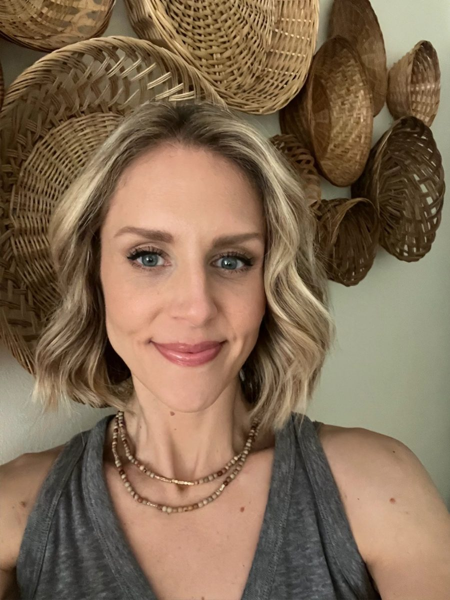
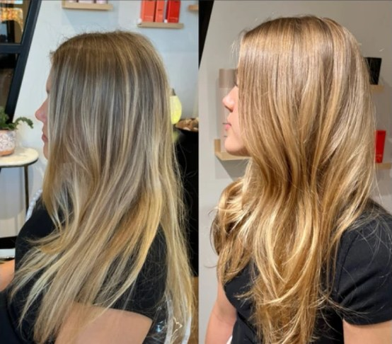
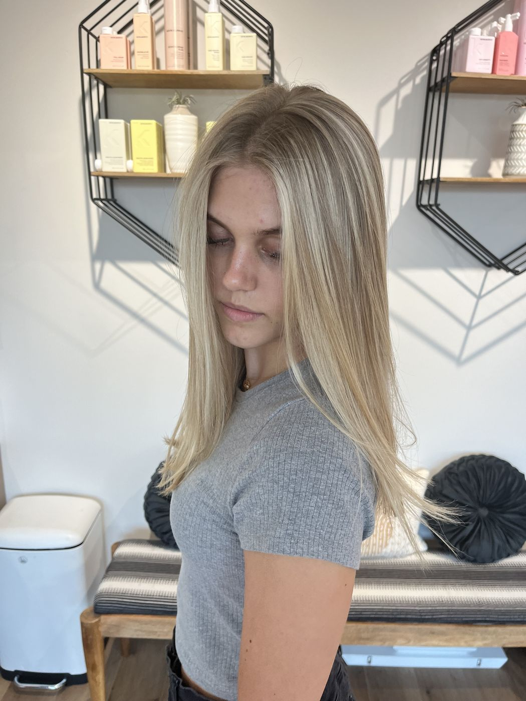
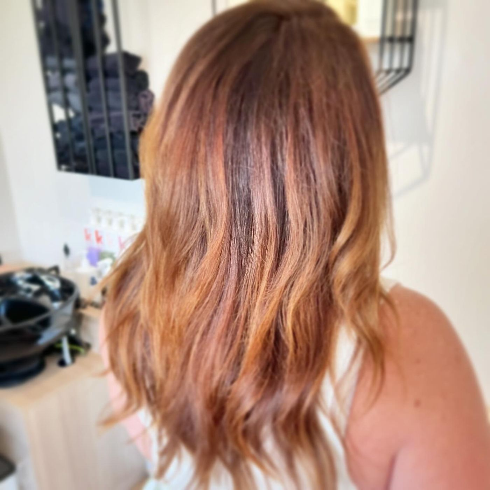
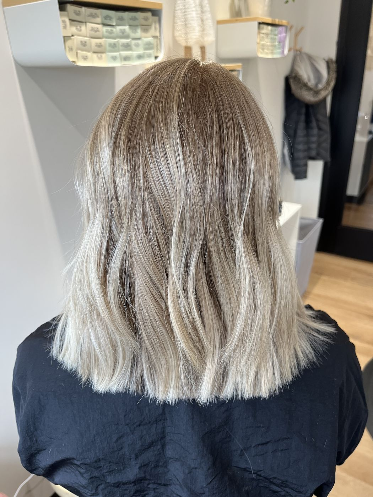

Meet Brandie
Brandie Ryan, known to her clients as Mama Ryan, is the owner and stylist at Looking Glass Salon. She offers hair color, highlights, balayage, cuts, formaldehyde-free keratin smoothing and hair extensions in Sterling, VA.

- Owner & stylist
- Her story

Her work
Color, cuts and highlights from Brandie's chair. See the whole gallery.


